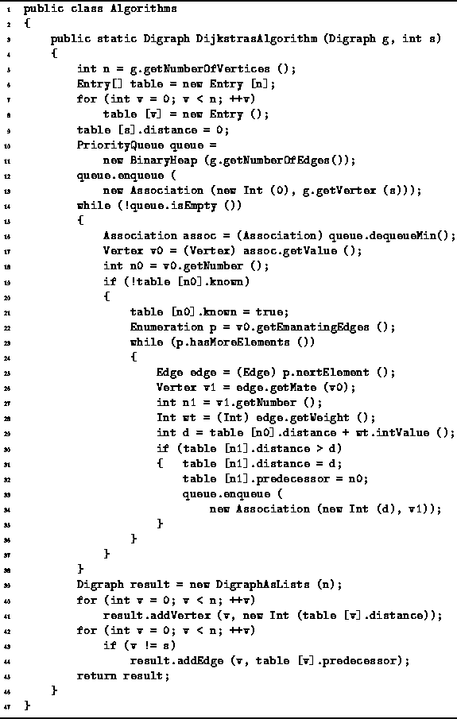
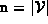

Data Structures and Algorithms
with Object-Oriented Design Patterns in Java
Data Structures and Algorithms
with Object-Oriented Design Patterns in Java
An implementation of Dijkstra's algorithm
is shown in Program  .
The DijkstrasAlgorithm method takes two arguments.
The first is a directed graph.
It is assumed that the directed graph is an edge-weighted graph
in which the weights are instances of the
Int class defined in Program .
The second argument is the number of the start vertex,
.
The DijkstrasAlgorithm method takes two arguments.
The first is a directed graph.
It is assumed that the directed graph is an edge-weighted graph
in which the weights are instances of the
Int class defined in Program .
The second argument is the number of the start vertex,  .
.
The DijkstrasAlgorithm method returns its result in the form of a shortest-path graph. Therefore, the return value is a Digraph instance.

Program: Dijkstra's algorithm.
The main data structures used are called
table and queue (lines 6 and 10).
The former is an array of  Entry elements.
The latter is a priority queue.
In this case,
a BinaryHeap of length  is used.
(See Section ).
is used.
(See Section ).
The algorithm begins by setting the tentative distance for the start vertex to zero and inserting the start vertex into the priority queue with priority zero (lines 9-13).
The main loop of the method comprises lines 14-38. In each iteration of this loop the vertex with the smallest distance is dequeued (line 17). The vertex is processed only if its table entry indicates that the shortest path is not already known (line 19).
When a vertex v0 is processed, its shortest path is deemed to be known (line 21). Then each vertex v1 adjacent to vertex is considered (lines 22-37). The distance to v1 along the path that passes through v0 is computed (line 29). If this distance is less than the tentative distance associated with v1, entries in the table for v1 are updated, and the v1 is given a new priority and inserted into the priority queue (lines 30-36).
The main loop terminates when all the shortest paths have been found. The shortest-path graph is then constructed using the information in the table (lines 39-44).
 Copyright © 1998 by Bruno R. Preiss, P.Eng. All rights reserved.
Copyright © 1998 by Bruno R. Preiss, P.Eng. All rights reserved.